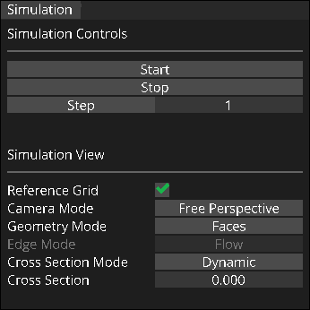
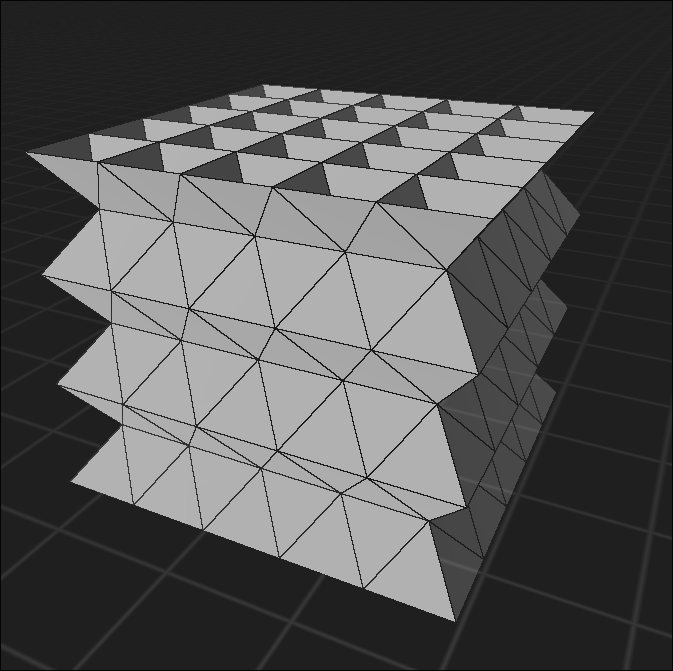
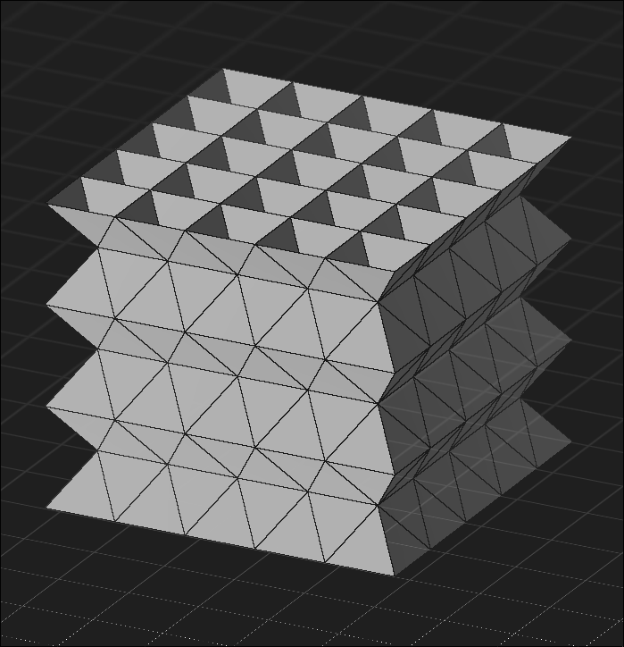
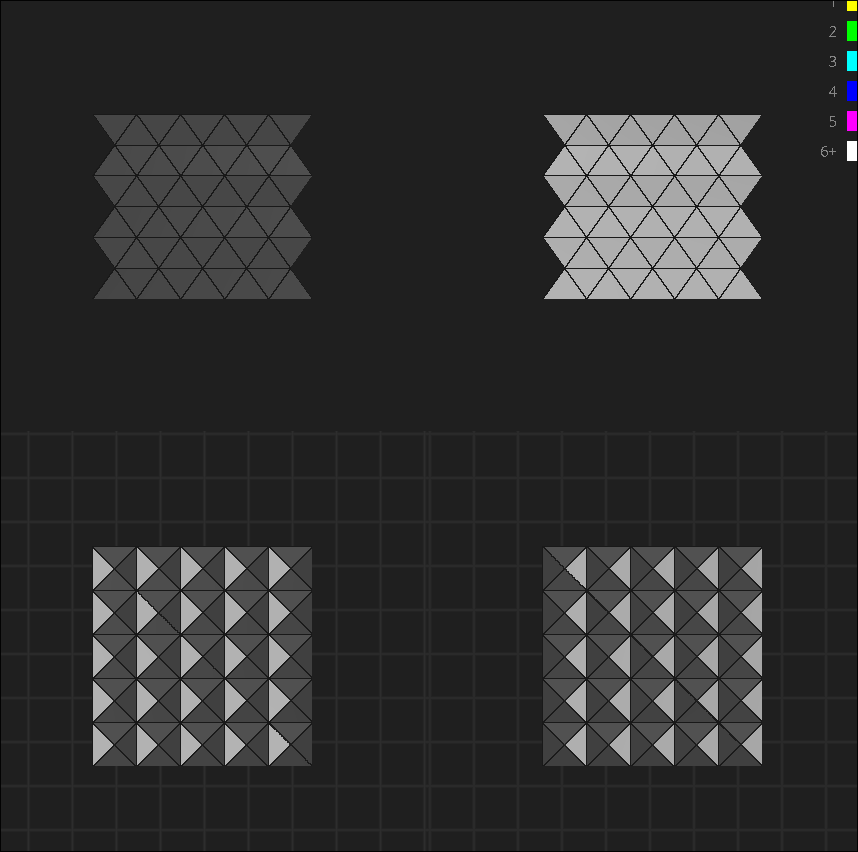
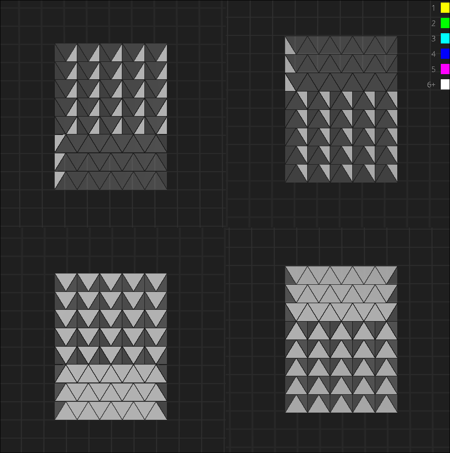
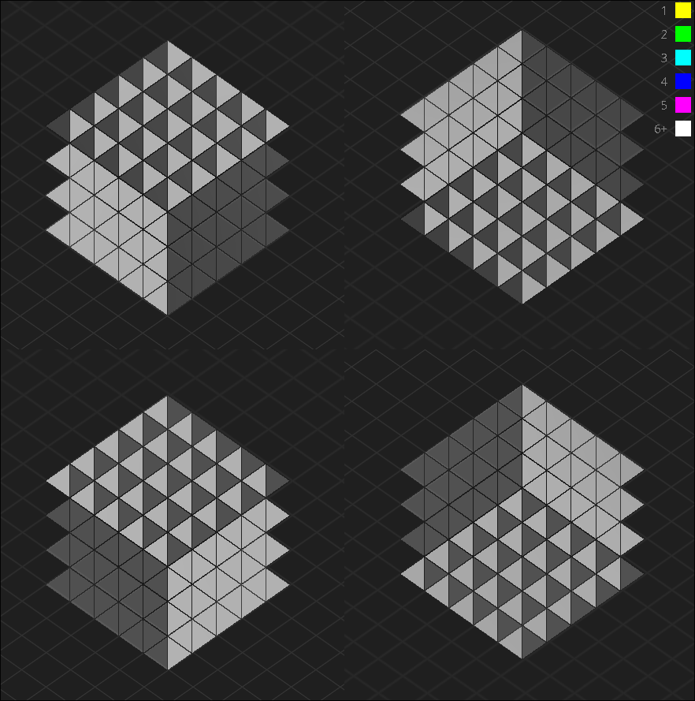
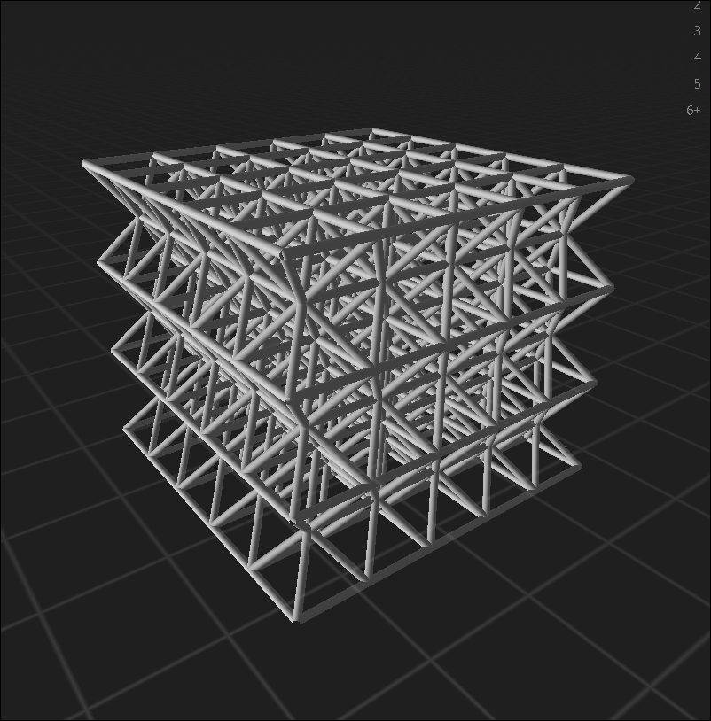
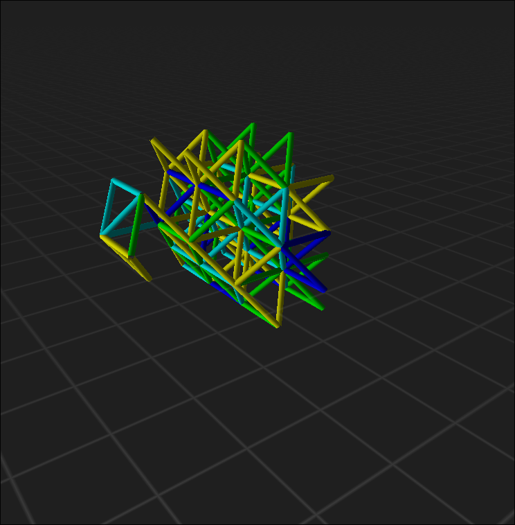
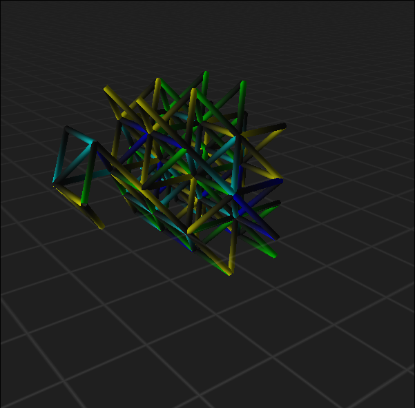
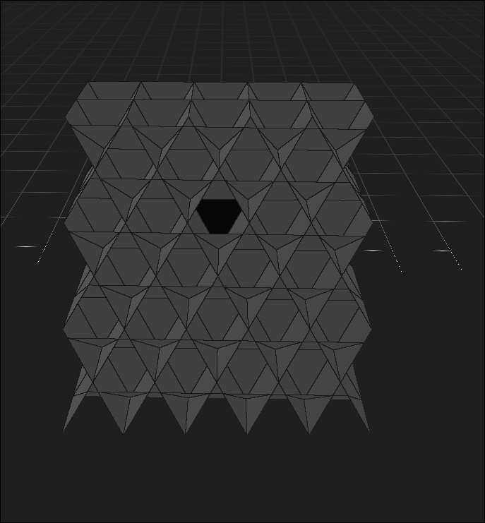

Simulation
Be prepared for a long read...
Broad Overview
The simulation panel is located in the bottom right of the application, and covers how the configuration is simulated and visualized.

Simulation Controls
To run a simulation, you can use the "Start", "Stop", and "Step" buttons in the simulation panel.
Pressing "Start" will start the simulation, in which every frame the edges will be fired. This button will then transform into a "Pause" button, which you can then use to pause the simulation. If paused, this button will then transform into a "Resume" button, which you can use to then resume the simulation. The simulation will always pick up off where it left at, and won't reset unless the "Stop" button is pressed.
The "Stop" button will halt the simulation and reset it back to the original specified configuration.
If you'd like to slowly analyze the simulation, you can use the "Step" button. The "Step" button, when pressed, will play the simulation for as many iterations as the number box next to it specifies. You can click and drag this number box to increase the number of iterations you want to play per step!
Simulation View
The simulation view section of the panel controls how the scene will be visualized. The more complex parts of these controls will be covered in the upcoming sections, but the simplist control in this view is the "Reference Grid" checkbox. If you click this, it will toggle the on-screen grid.
Camera Mode
The "Camera Mode" control is a dropdown menu where you can select from multiple options on how to view the scene with it's camera.
The first option is "Free Perspective". This option is what you may be most familiar with, where a typical perspective camera can be freely controlled to view the geometry. You can think of this as the most similar camera type to just viewing an object in reality.

The second option is "Free Orthographic". This option is similar to a perspective camera in the sense that it can be freely controlled. However, in this camera configuration, parallel lines will be viewed as parallel! This may sound confusing, but if you're confused, try it out! You'll be able to more intuitively understand what this means after playing around with it.

The third option is "Cubic". This option uses an orthographic camera to view the top, bottom, and 2 diagonal sides of the geometry at the same time. Here the camera movement will be supressed, but you'll still be able to zoom in and out. The viewport will be divided into 4 quadrants, with top row covering the side views and the bottom row covering the top and bottom views.

The fourth option is "Ramped". This option is similar to the "Cubic" view, but instead of having a straight axis-aligned view of the geometry, it will orient itself aligned to the normal of the tetrahedron. In other words, the top row will cover the +45 degree view and the -45 degree view of the left side of the geometry, and the bottom row will cover the +45/-45 degree view of the right side.

The fith option is "Corners". This option is similar to the "Ramped" view, but instead of being aligned parallel to the geometry sides, it looks from the corners of the geometry.

Geometry Mode
The geometry mode control is also a dropdown menu, with the options to view the configuration as "Faces" or "Edges". "Faces"" will render the faces of the geometry, while the "Edges" will render the edges of the geometry as cylinders. To use selection controls and edit your faces as holes or initial edge flow values, you will have to be in "Faces" mode. "Faces" mode does not reflect any flow values at the moment, so it is not recommended to view the simulation progression using "Faces" mode.
Edge Mode
Edge mode is only available if your geometry mode is currently in "Edges" mode. Edge mode allows for more control over how you visualize your edges.
The first option, "Static", will just show every single edge as static colors. This can be useful for visualizing your entire geometry at once without being concerned with if edges have flow, as edges with 0 flow will show up as black cylinders.

The second option, "Colored", will show every single edge colored with its flow value. You can see the key for edge flow values to colors if you have the color key toggled by pressing K.

The third option, "Directional", will effectively act the same as the "Colored" option, with one small difference: depending on the flow directionality, the color will change from black to the respective flow color in the direction the flow is going.

The fourth option, "Flow", will be the same as "Directional", except the color of an edge will actually move in the direction of the flow! This may help visualize the nature of the configuration, so be sure to try it out!
Cross Section
You may notice that it is hard to select faces and edges within the geometric structure because you cannot hover over edges and faces that are covered by other geometry of the configuration. To remedy this, you can "cut" into the geometry using the cross section. At the moment, "cross section mode" does not do anything, but it is planned on snapping to the closest face/edge. As of now, you can click and drag the "Cross Section" field to "cut" into the geometry by moving the camera view plane forward.

This is not restrained to "Face" mode, so if you think this may be helpful for visualizing and looking inside a simulation visual, try cutting into it with this control!